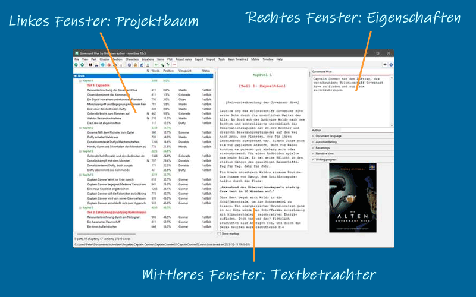
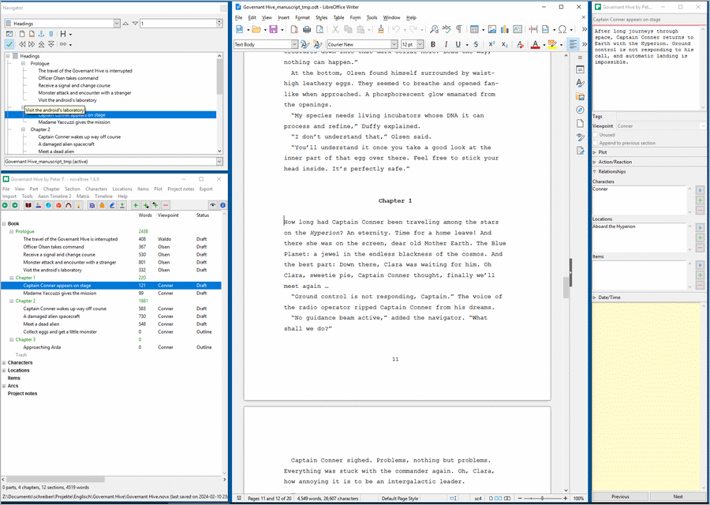

Der Arbeitsbereich
Der Arbeitsbereich von novelibre ist in drei Fenster unterteilt:
Projektbaum
Der Projektbaum im linken Fenster zeigt die Organisation des Projekts.
Die Elemente des Baums sind entsprechend des Abschnittstyps eingefärbt (siehe Grundlegende Konzepte). Abschnitte vom Typ Normal sind farblich hervorgehoben, je nach dem, welcher Farbgebungsmodus eingestellt ist (siehe Optionen im Ansicht-Menü).
Die Reihenfolge der Spalten kann geändert werden (siehe Optionen im Ansicht-Menü).
Beim Rechtsklick auf ein Baumelement öffnet sich ein Kontextmenü mit verschiedenen Auswahlmöglichkeiten.
Der Typ der Kapitel und Abschnitte kann ebenso wie der Fertigstellungsstatus der Abschnitte über das Kontextmenü geändert werden.
Projektbaumstruktur
Der Buch-Zweig umfasst die Teile, Kapitel und Abschnitte, die zum Romanmanuskript gehören.
Die Figuren/Schauplätze/Gegenstände-Zweige enthalten Beschreibungen der Weltenbau-Elemente, die zu den Buchabschnitten in Beziehung gesetzt werden können.
Der Plotlinien-Zweig umfasst die Plotlinien und Plotpunkte.
Der Projektnotizen-Zweig enthält Projektnotizen.
Arbeiten im Projektbaum
- Sich durch den Baum bewegen
novelibre hat einen Browservelauf der ausgewählten Baumelemente. Damit können Sie sich vor- und zurückbewegen, zum Beispiel zwischen einem Abschnitt und den Figuren, die in ihm vorkommen.
 oder
oder Alt-Links: Gehe einen Knoten zurück in im Verlauf. oder
oder Alt-Rechts: Gehe einen Knoten vor in im Verlauf.
Hinweis
Unter Windows sollten die „Vor“ und „Zurück“-Maustasten (falls vorhanden) ebenfalls funktionieren.
- Knoten anderer Art überspringen
Mit gedrückter
Alt-Taste können Sie direkt zum vorigen oder nächsten Baumelement auf der selben Ebene (z.B. Abschnitt oder Kapitel oder Figur) navigieren.Alt-Auf: Gehe zum vorherigen Knoten der gleichen Art.Alt-Ab: Gehe zum nächsten Knoten der gleichen Art.
Baumelemente verschieben
Bei gedrückter Alt-Taste mit der Maus ziehen.
Hinweis
Bei manchen Linux-Desktops kann es erforderlich sein,
zuerst die Maustaste zu drücken, und dann die Alt-Taste.
Vorsicht
Denken Sie daran, es gibt keine „Rückgängig“-Funktion.
Baumelemente löschen
Das zu löschende Element auswählen und die Entf-Taste drücken.
Teile und Kapitel werden gelöscht.
Abschnitte werden als „unbenutzt“ gekennzeichnet und in den „Papierkorb“ verschoben.
Einen Teil zu löschen, hat keinen Einfluss auf nachgeordnete Kapitel.
Wird ein Kapitel gelöscht, werden dessen Abschnitte in den „Papierkorb“ verschoben.
Das „Papierkorb“-Kapitel wird automatisch erstellt, wenn es gebraucht wird.
Wird das „Papierkorb“-Kapitel gelöscht, löscht das auch die enthaltenen Abschnitte.
Baumelemente kopieren und einfügen
Sie können die folgenden Baumelemente über die Zwischenablage kopieren und einfügen:
Teile und Kapitel,
Abschnitte,
Stadien,
Plotlinien,
Plotpunkte,
Figuren,
Schauplätze,
Gegenstände,
Projektnotizen.
Elemente können einzeln über die Zwischenablage übertragen werden. Die Eigenschaften und „Kinder“ des Elements werden kopiert, mit Ausnahme der Beziehungen.
Textbetrachter
Der Textbetrachter im mittleren Fenster zeigt die Inhalte der Teile, Kapitel und Abschnitte mit deren Titeln als Überschriften.
Mit Ansicht > Textbetrachter anzeigen/verbergen oder
Strg-Toder Klick auf können Sie das mittlere
Fenster mit dem Textbetrachter öffnen und schließen.
können Sie das mittlere
Fenster mit dem Textbetrachter öffnen und schließen.Beim Öffnen zeigt der Textbetrachter den Text an der Stelle des aktuell gewählten Abschnitts an.
Wird die Auswahl im Baum geändert, bewegt sich der angezeigte Text mit.
Allerdings können Sie den Text auch unabhängig davon mit dem Mausrad oder dem Scrollbalken scrollen.
Sie können Text mit der Maus auswählen und mit
Strg-Cin die Zwischenablage kopieren.Sie können den Text nicht im Betrachter bearbeiten. Für so etwas benötigt man ein Editor-Plugin, wie zum Beispiel nv_editor.
Der Abschnittstext ist entsprechend dem Abschnittstyp eingefärbt (siehe Gtundlegende Konzepte).
Mit dem Auswahlfeld Markup anzeigen können Sie das XML-Markup anzeigen oder verbergen.
Eigenschaften
Die Eigenschaften-Ansicht im rechten Fenster zeigt Eigenschaften und Metadaten des ausgewählten Baumelements an.
Projekteinstellungen werden mit den Buch-Eigenschaften vorgenommen.
Mit Ansicht > Eigenschaften anzeigen/verbergen oder
Strg-Alt-Toder Klick auf können Sie das rechte Fenster
mit den Eigenschaften öffnen und schließen.
können Sie das rechte Fenster
mit den Eigenschaften öffnen und schließen.Beim Öffnen zeigt das Fenster die Eigenschaften des aktuell gewählten Baumelements an.
Mit Ansicht > Eigenschaften abtrennen/andocken oder
Strg-Alt-Dkönnen Sie das Eigenschaftsfenster abtrennen und wieder andocken.Schließt man das abgetrennte Eigenschaftsfenster, wird es wieder angedockt.
Auf großen Bildschirmen können Sie novelibre und Writer mit abgekoppelten Fenstern anordnen.
Das folgende Bild zeigt ein Beispiel: LibreOffice (Mitte) mit abgetrenntem Navigator (oben links), und novelibre (unten links) mit abgetrennten Eigenschaften (rechts)
Werkzeugleiste
Die zweite Leiste von oben ist die Werkzeugleiste mit den Schaltflächen für häufige Vorgänge.
Statusleiste
Die zweite Leiste von unten ist die Statusleiste. Normalierweise zeigt sie statistische Angaben zum Projekt, wie zum Beispiel die Wortzahl. Bei Bedarf werden sie mit Meldungen des Programms überschrieben.
Meldungen vor grünem Hintergrund zeigen erfolgreiche Vorgänge an.
Meldungen vor gelbem Hintergrund zeigen Benachrichtigungen oder Warnungen an.
Meldungen vor rotem Hintergrund zeigen Fehlermeldungen an.
Tipp
Die Normalansicht können Sie jederzeit durch Klicken auf die Statusleiste wiederherstellen.
Fußleiste
Die Fußleiste ganz unten zeigt den Pfad und das Speicherdatum der Projektdatei an.
- Änderungsanzeige
Wenn es ungesicherte Änderungen gibt, ist die Fußleiste goldgelb.
- Projektsperre
Ist das Projekt gesperrt, wird die Fußleiste invertiert angezeigt.